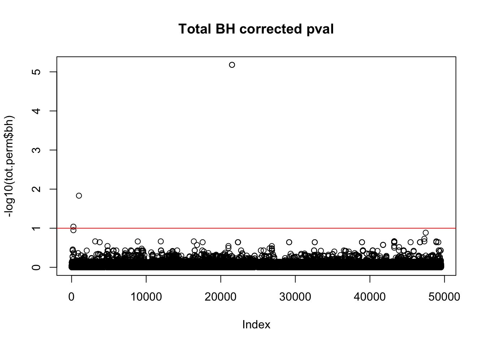
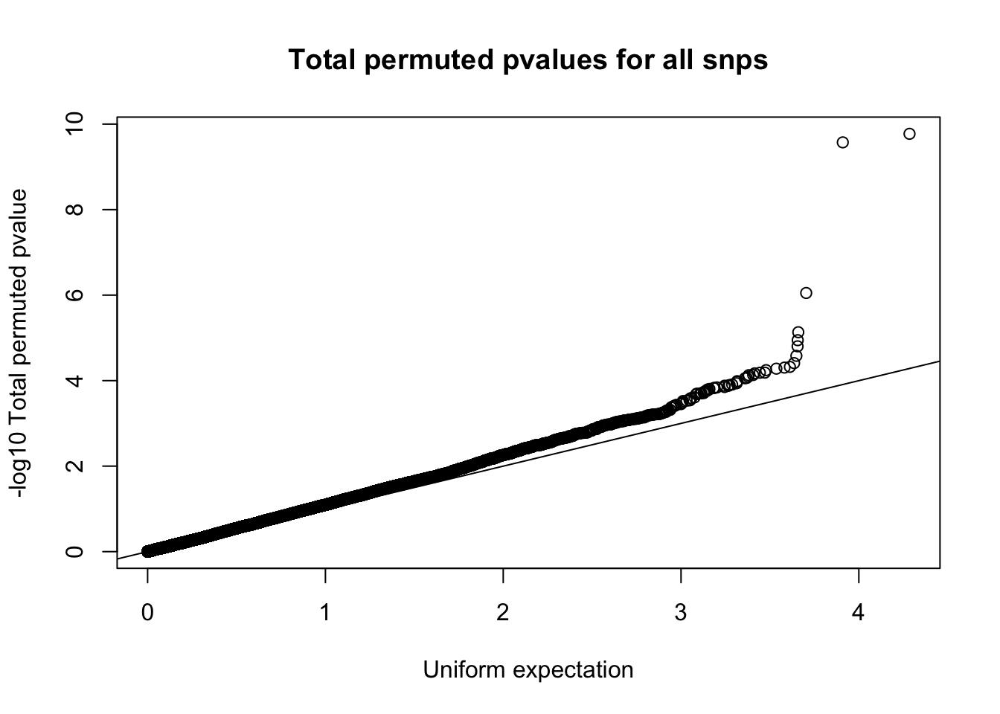
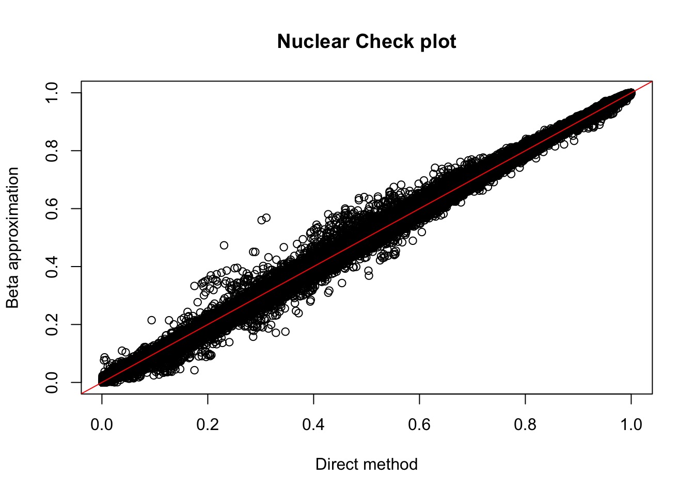
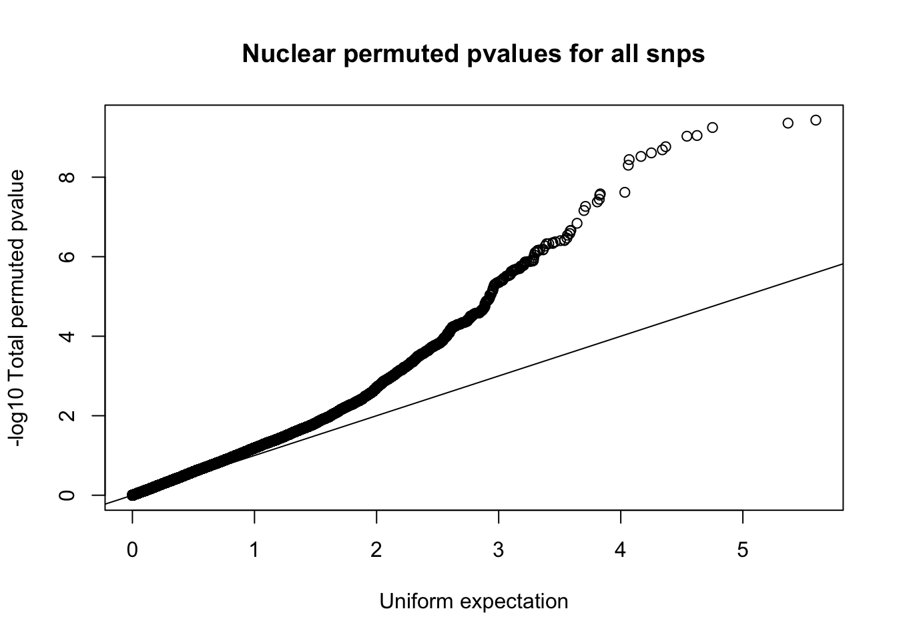
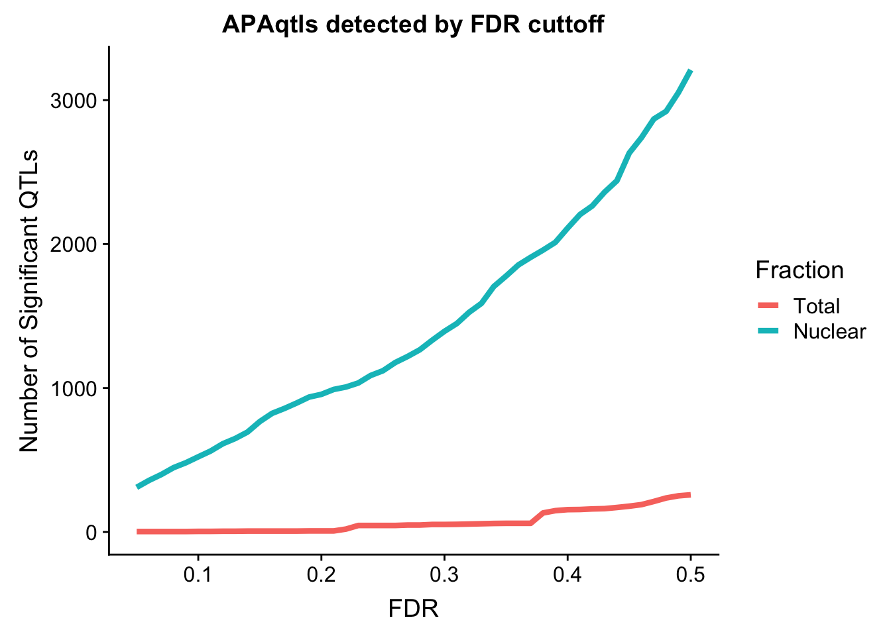

peakOverlap_oppstrand
Briana Mittleman
8/30/2018
Last updated: 2018-09-05
workflowr checks: (Click a bullet for more information)-
✔ R Markdown file: up-to-date
Great! Since the R Markdown file has been committed to the Git repository, you know the exact version of the code that produced these results.
-
✔ Environment: empty
Great job! The global environment was empty. Objects defined in the global environment can affect the analysis in your R Markdown file in unknown ways. For reproduciblity it’s best to always run the code in an empty environment.
-
✔ Seed:
set.seed(12345)The command
set.seed(12345)was run prior to running the code in the R Markdown file. Setting a seed ensures that any results that rely on randomness, e.g. subsampling or permutations, are reproducible. -
✔ Session information: recorded
Great job! Recording the operating system, R version, and package versions is critical for reproducibility.
-
Great! You are using Git for version control. Tracking code development and connecting the code version to the results is critical for reproducibility. The version displayed above was the version of the Git repository at the time these results were generated.✔ Repository version: 008bb9c
Note that you need to be careful to ensure that all relevant files for the analysis have been committed to Git prior to generating the results (you can usewflow_publishorwflow_git_commit). workflowr only checks the R Markdown file, but you know if there are other scripts or data files that it depends on. Below is the status of the Git repository when the results were generated:
Note that any generated files, e.g. HTML, png, CSS, etc., are not included in this status report because it is ok for generated content to have uncommitted changes.Ignored files: Ignored: .DS_Store Ignored: .Rhistory Ignored: .Rproj.user/ Ignored: output/.DS_Store Untracked files: Untracked: analysis/ncbiRefSeq_sm.sort.mRNA.bed Untracked: analysis/snake.config.notes.Rmd Untracked: data/18486.genecov.txt Untracked: data/APApeaksYL.total.inbrain.bed Untracked: data/RNAkalisto/ Untracked: data/Totalpeaks_filtered_clean.bed Untracked: data/YL-SP-18486-T-combined-genecov.txt Untracked: data/YL-SP-18486-T_S9_R1_001-genecov.txt Untracked: data/bedgraph_peaks/ Untracked: data/bin200.5.T.nuccov.bed Untracked: data/bin200.Anuccov.bed Untracked: data/bin200.nuccov.bed Untracked: data/clean_peaks/ Untracked: data/comb_map_stats.csv Untracked: data/comb_map_stats.xlsx Untracked: data/combined_reads_mapped_three_prime_seq.csv Untracked: data/gencov.test.csv Untracked: data/gencov.test.txt Untracked: data/gencov_zero.test.csv Untracked: data/gencov_zero.test.txt Untracked: data/gene_cov/ Untracked: data/joined Untracked: data/leafcutter/ Untracked: data/merged_combined_YL-SP-threeprimeseq.bg Untracked: data/nom_QTL/ Untracked: data/nom_QTL_opp/ Untracked: data/nuc6up/ Untracked: data/peakPerRefSeqGene/ Untracked: data/perm_QTL/ Untracked: data/perm_QTL_opp/ Untracked: data/reads_mapped_three_prime_seq.csv Untracked: data/smash.cov.results.bed Untracked: data/smash.cov.results.csv Untracked: data/smash.cov.results.txt Untracked: data/smash_testregion/ Untracked: data/ssFC200.cov.bed Untracked: data/temp.file1 Untracked: data/temp.file2 Untracked: data/temp.gencov.test.txt Untracked: data/temp.gencov_zero.test.txt Untracked: output/picard/ Untracked: output/plots/ Untracked: output/qual.fig2.pdf Unstaged changes: Modified: analysis/28ind.peak.explore.Rmd Modified: analysis/cleanupdtseq.internalpriming.Rmd Modified: analysis/dif.iso.usage.leafcutter.Rmd Modified: analysis/diff_iso_pipeline.Rmd Modified: analysis/explore.filters.Rmd Modified: analysis/peak.cov.pipeline.Rmd Modified: analysis/pheno.leaf.comb.Rmd Modified: analysis/test.max2.Rmd Modified: code/Snakefile
Expand here to see past versions:
| File | Version | Author | Date | Message |
|---|---|---|---|---|
| Rmd | 008bb9c | Briana Mittleman | 2018-09-05 | add QTL expamples |
| html | 4d70454 | Briana Mittleman | 2018-08-31 | Build site. |
| Rmd | c4d9436 | Briana Mittleman | 2018-08-31 | add results and compare to ceu |
| html | 10c20cd | Briana Mittleman | 2018-08-31 | Build site. |
| Rmd | 1bc3953 | Briana Mittleman | 2018-08-31 | QTL results |
| html | 644eed7 | Briana Mittleman | 2018-08-31 | Build site. |
| Rmd | 3b9a50d | Briana Mittleman | 2018-08-31 | add qtl code for normal cond. |
| html | 3834ae3 | Briana Mittleman | 2018-08-30 | Build site. |
| Rmd | 8e09d26 | Briana Mittleman | 2018-08-30 | feature counts -s2 |
| html | b4bda1b | Briana Mittleman | 2018-08-30 | Build site. |
| Rmd | ed1f658 | Briana Mittleman | 2018-08-30 | write code to rerun QTL with off strand |
In the dataprocfigures file I realized the peaks mapp to the opposite strand. I want to remap the peaks to genes on the opposite strand make the phenotpyes and rerun the QTL analysis.
Map peaks to genes on opp strand
#!/bin/bash
#SBATCH --job-name=intGenes_combfilterPeaksOppStrand
#SBATCH --account=pi-yangili1
#SBATCH --time=24:00:00
#SBATCH --output=intGenes_combfilterPeaksOppStrand.out
#SBATCH --error=intGenes_combfilterPeaksOppStrand.err
#SBATCH --partition=broadwl
#SBATCH --mem=12G
#SBATCH --mail-type=END
module load Anaconda3
source activate three-prime-env
bedtools intersect -wa -wb -sorted -S -a /project2/gilad/briana/threeprimeseq/data/mergedPeaks_comb/filtered_APApeaks_merged_allchrom.named.fixed.bed -b /project2/gilad/briana/genome_anotation_data/ncbiRefSeq_sm_noChr.sort.mRNA.bed > /project2/gilad/briana/threeprimeseq/data/mergedPeaks_comb/filtered_APApeaks_merged_allchrom_refseqGenes.OppStrand.bedGet rid of the extra columns. I will now use the gene strand so the feature counts can be stranded.
awk '{print $1 "\t" $2 "\t" $3 "\t" $4 "\t" $5 "\t" $12 "\t" $10}' /project2/gilad/briana/threeprimeseq/data/mergedPeaks_comb/filtered_APApeaks_merged_allchrom_refseqGenes.OppStrand.bed > /project2/gilad/briana/threeprimeseq/data/mergedPeaks_comb/filtered_APApeaks_merged_allchrom_refseqGenes.OppStrand_sm.bedMake this an SAF file with the correct peak ID. bed2saf_oppstrand_peaks.py
from misc_helper import *
fout = file("/project2/gilad/briana/threeprimeseq/data/mergedPeaks_comb/filtered_APApeaks_merged_allchrom_refseqGenes.OppStrand_sm.SAF",'w')
fout.write("GeneID\tChr\tStart\tEnd\tStrand\n")
for ln in open("/project2/gilad/briana/threeprimeseq/data/mergedPeaks_comb/filtered_APApeaks_merged_allchrom_refseqGenes.OppStrand_sm.bed"):
chrom, start, end, name, score, strand, gene = ln.split()
name_i=int(name)
start_i=int(start)
end_i=int(end)
ID = "peak%d:%s:%d:%d:%s:%s"%(name_i, chrom, start_i, end_i, strand, gene)
fout.write("%s\t%s\t%d\t%d\t%s\n"%(ID, chrom, start_i, end_i, strand))
fout.close()Create leafcutter phenotypes
Run feature counts:
ref_gene_peakOppStrand_fc.sh
#!/bin/bash
#SBATCH --job-name=ref_gene_peakOppStrand_fc
#SBATCH --account=pi-yangili1
#SBATCH --time=24:00:00
#SBATCH --output=ref_gene_peakOppStrand_fc.out
#SBATCH --error=ref_gene_peakOppStrand_fc.err
#SBATCH --partition=broadwl
#SBATCH --mem=12G
#SBATCH --mail-type=END
module load Anaconda3
source activate three-prime-env
featureCounts -a /project2/gilad/briana/threeprimeseq/data/mergedPeaks_comb/filtered_APApeaks_merged_allchrom_refseqGenes.OppStrand_sm.SAF -F SAF -o /project2/gilad/briana/threeprimeseq/data/filtPeakOppstrand_cov/filtered_APApeaks_merged_allchrom_refseqGenes.OppStrand_sm_quant.fc /project2/gilad/briana/threeprimeseq/data/sort/*-sort.bam -s 2
Also do this for total and nuclear seperately.
#!/bin/bash
#SBATCH --job-name=ref_gene_peakOppStrand_fc_TN
#SBATCH --account=pi-yangili1
#SBATCH --time=24:00:00
#SBATCH --output=ref_gene_peakOppStrand_fc_TN.out
#SBATCH --error=ref_gene_peakOppStrand_fc_TN.err
#SBATCH --partition=broadwl
#SBATCH --mem=12G
#SBATCH --mail-type=END
module load Anaconda3
source activate three-prime-env
featureCounts -O -a /project2/gilad/briana/threeprimeseq/data/mergedPeaks_comb/filtered_APApeaks_merged_allchrom_refseqGenes.OppStrand_sm.SAF -F SAF -o /project2/gilad/briana/threeprimeseq/data/filtPeakOppstrand_cov/filtered_APApeaks_merged_allchrom_refseqGenes.OppStrand_sm_quant.Total.fc /project2/gilad/briana/threeprimeseq/data/sort/*-T-*-sort.bam -s 2
featureCounts -O -a /project2/gilad/briana/threeprimeseq/data/mergedPeaks_comb/filtered_APApeaks_merged_allchrom_refseqGenes.OppStrand_sm.SAF -F SAF -o /project2/gilad/briana/threeprimeseq/data/filtPeakOppstrand_cov/filtered_APApeaks_merged_allchrom_refseqGenes.OppStrand_sm_quant.Nuclear.fc /project2/gilad/briana/threeprimeseq/data/sort/*-N-*-sort.bam -s 2Fix the headers:
- fix_head_fc_opp_tot.py
infile= open("/project2/gilad/briana/threeprimeseq/data/filtPeakOppstrand_cov/filtered_APApeaks_merged_allchrom_refseqGenes.OppStrand_sm_quant.Total.fc", "r")
fout = file("/project2/gilad/briana/threeprimeseq/data/filtPeakOppstrand_cov/filtered_APApeaks_merged_allchrom_refseqGenes.OppStrand_sm_quant.Total_fixed.fc",'w')
for line, i in enumerate(infile):
if line == 1:
i_list=i.split()
libraries=i_list[:6]
for sample in i_list[6:]:
full = sample.split("/")[7]
samp= full.split("-")[2:4]
lim="_"
samp_st=lim.join(samp)
libraries.append(samp_st)
first_line= "\t".join(libraries)
fout.write(first_line + '\n')
else :
fout.write(i)
fout.close()- fix_head_fc_opp_nuc.py
infile= open("/project2/gilad/briana/threeprimeseq/data/filtPeakOppstrand_cov/filtered_APApeaks_merged_allchrom_refseqGenes.OppStrand_sm_quant.Nuclear.fc", "r")
fout = file("/project2/gilad/briana/threeprimeseq/data/filtPeakOppstrand_cov/filtered_APApeaks_merged_allchrom_refseqGenes.OppStrand_sm_quant.Nuclear_fixed.fc",'w')
for line, i in enumerate(infile):
if line == 1:
i_list=i.split()
libraries=i_list[:6]
for sample in i_list[6:]:
full = sample.split("/")[7]
samp= full.split("-")[2:4]
lim="_"
samp_st=lim.join(samp)
libraries.append(samp_st)
first_line= "\t".join(libraries)
fout.write(first_line + '\n')
else :
fout.write(i)
fout.close()Create file IDS:
- create_fileid_opp_total.py
fout = file("/project2/gilad/briana/threeprimeseq/data/filtPeakOppstrand_cov/file_id_mapping_total.txt",'w')
infile= open("/project2/gilad/briana/threeprimeseq/data/filtPeakOppstrand_cov/filtered_APApeaks_merged_allchrom_refseqGenes.OppStrand_sm_quant.Total_fixed.fc", "r")
for line, i in enumerate(infile):
if line == 0:
i_list=i.split()
files= i_list[10:-2]
for each in files:
full = each.split("/")[7]
samp= full.split("-")[2:4]
lim="_"
samp_st=lim.join(samp)
outLine= full[:-1] + "\t" + samp_st
fout.write(outLine + "\n")
fout.close()- create_fileid_opp_nuc.py
fout = file("/project2/gilad/briana/threeprimeseq/data/filtPeakOppstrand_cov/file_id_mapping_nuclear.txt",'w')
infile= open("/project2/gilad/briana/threeprimeseq/data/filtPeakOppstrand_cov/filtered_APApeaks_merged_allchrom_refseqGenes.OppStrand_sm_quant.Nuclear_fixed.fc", "r")
for line, i in enumerate(infile):
if line == 0:
i_list=i.split()
files= i_list[10:-2]
for each in files:
full = each.split("/")[7]
samp= full.split("-")[2:4]
lim="_"
samp_st=lim.join(samp)
outLine= full[:-1] + "\t" + samp_st
fout.write(outLine + "\n")
fout.close()Make Phenotypes:
- makePhenoRefSeqPeaks_opp_Total.py
#PYTHON 3
dic_IND = {}
dic_BAM = {}
for ln in open("/project2/gilad/briana/threeprimeseq/data/filtPeakOppstrand_cov/file_id_mapping_total.txt"):
bam, IND = ln.split("\t")
IND = IND.strip()
dic_IND[bam] = IND
if IND not in dic_BAM:
dic_BAM[IND] = []
dic_BAM[IND].append(bam)
#now I have ind dic with keys as the bam and ind as the values
#I also have a bam dic with ind as the keys and bam as the values
inds=list(dic_BAM.keys()) #list of ind libraries
#list of genes
count_file=open("/project2/gilad/briana/threeprimeseq/data/filtPeakOppstrand_cov/filtered_APApeaks_merged_allchrom_refseqGenes.OppStrand_sm_quant.Total_fixed.fc", "r")
genes=[]
for line , i in enumerate(count_file):
if line > 1:
i_list=i.split()
id=i_list[0]
id_list=id.split(":")
gene=id_list[5]
if gene not in genes:
genes.append(gene)
#make the ind and gene dic
dic_dub={}
for g in genes:
dic_dub[g]={}
for i in inds:
dic_dub[g][i]=0
#populate the dictionary
count_file=open("/project2/gilad/briana/threeprimeseq/data/filtPeakOppstrand_cov/filtered_APApeaks_merged_allchrom_refseqGenes.OppStrand_sm_quant.Total_fixed.fc", "r")
for line, i in enumerate(count_file):
if line > 1:
i_list=i.split()
id=i_list[0]
id_list=id.split(":")
g= id_list[5]
values=list(i_list[6:])
list_list=[]
for ind,val in zip(inds, values):
list_list.append([ind, val])
for num, name in enumerate(list_list):
dic_dub[g][list_list[num][0]] += int(list_list[num][1])
#write the file by acessing the dictionary and putting values in the table ver the value in the dic
fout=open("/project2/gilad/briana/threeprimeseq/data/phenotypes_filtPeakOppstrand/filtered_APApeaks_merged_allchrom_refseqGenes.OppStrand_sm_quant.Total.pheno_fixed.txt","w")
peak=["chrom"]
inds_noL=[]
for each in inds:
indsNA= "NA" + each[:-2]
inds_noL.append(indsNA)
fout.write(" ".join(peak + inds_noL) + '\n' )
count_file=open("/project2/gilad/briana/threeprimeseq/data/filtPeakOppstrand_cov/filtered_APApeaks_merged_allchrom_refseqGenes.OppStrand_sm_quant.Total_fixed.fc", "r")
for line , i in enumerate(count_file):
if line > 1:
i_list=i.split()
id=i_list[0]
id_list=id.split(":")
gene=id_list[5]
start=int(id_list[2])
end=int(id_list[3])
buff=[]
buff.append("chr%s:%d:%d:%s_%s_%s"%(id_list[1], start, end, id_list[5], id_list[4], id_list[0]))
for x,y in zip(i_list[6:], inds):
b=int(dic_dub[gene][y])
t=int(x)
buff.append("%d/%d"%(t,b))
fout.write(" ".join(buff)+ '\n')
fout.close()- makePhenoRefSeqPeaks_opp_Nuclear.py
#PYTHON 3
dic_IND = {}
dic_BAM = {}
for ln in open("/project2/gilad/briana/threeprimeseq/data/filtPeakOppstrand_cov/file_id_mapping_nuclear.txt"):
bam, IND = ln.split("\t")
IND = IND.strip()
dic_IND[bam] = IND
if IND not in dic_BAM:
dic_BAM[IND] = []
dic_BAM[IND].append(bam)
#now I have ind dic with keys as the bam and ind as the values
#I also have a bam dic with ind as the keys and bam as the values
inds=list(dic_BAM.keys()) #list of ind libraries
#list of genes
count_file=open("/project2/gilad/briana/threeprimeseq/data/filtPeakOppstrand_cov/filtered_APApeaks_merged_allchrom_refseqGenes.OppStrand_sm_quant.Nuclear_fixed.fc", "r")
genes=[]
for line , i in enumerate(count_file):
if line > 1:
i_list=i.split()
id=i_list[0]
id_list=id.split(":")
gene=id_list[5]
if gene not in genes:
genes.append(gene)
#make the ind and gene dic
dic_dub={}
for g in genes:
dic_dub[g]={}
for i in inds:
dic_dub[g][i]=0
#populate the dictionary
count_file=open("/project2/gilad/briana/threeprimeseq/data/filtPeakOppstrand_cov/filtered_APApeaks_merged_allchrom_refseqGenes.OppStrand_sm_quant.Nuclear_fixed.fc", "r")
for line, i in enumerate(count_file):
if line > 1:
i_list=i.split()
id=i_list[0]
id_list=id.split(":")
g= id_list[5]
values=list(i_list[6:])
list_list=[]
for ind,val in zip(inds, values):
list_list.append([ind, val])
for num, name in enumerate(list_list):
dic_dub[g][list_list[num][0]] += int(list_list[num][1])
#write the file by acessing the dictionary and putting values in the table ver the value in the dic
fout=open("/project2/gilad/briana/threeprimeseq/data/phenotypes_filtPeakOppstrand/filtered_APApeaks_merged_allchrom_refseqGenes.OppStrand_sm_quant.Nuclear.pheno_fixed.txt","w")
peak=["chrom"]
inds_noL=[]
for each in inds:
indsNA= "NA" + each[:-2]
inds_noL.append(indsNA)
fout.write(" ".join(peak + inds_noL) + '\n' )
count_file=open("/project2/gilad/briana/threeprimeseq/data/filtPeakOppstrand_cov/filtered_APApeaks_merged_allchrom_refseqGenes.OppStrand_sm_quant.Nuclear_fixed.fc", "r")
for line , i in enumerate(count_file):
if line > 1:
i_list=i.split()
id=i_list[0]
id_list=id.split(":")
gene=id_list[5]
start=int(id_list[2])
end=int(id_list[3])
buff=[]
buff.append("chr%s:%d:%d:%s_%s_%s"%(id_list[1], start, end, id_list[5], id_list[4], id_list[0]))
for x,y in zip(i_list[6:], inds):
b=int(dic_dub[gene][y])
t=int(x)
buff.append("%d/%d"%(t,b))
fout.write(" ".join(buff)+ '\n')
fout.close()I can run these with the following bash script:
- run_makePhen_sep_Opp.sh
#!/bin/bash
#SBATCH --job-name=run_makepheno_sep
#SBATCH --account=pi-yangili1
#SBATCH --time=24:00:00
#SBATCH --output=run_makepheno_sep.out
#SBATCH --error=run_makepheno_sep.err
#SBATCH --partition=broadwl
#SBATCH --mem=12G
#SBATCH --mail-type=END
module load Anaconda3
source activate three-prime-env
python makePhenoRefSeqPeaks_opp_Total.py
python makePhenoRefSeqPeaks_opp_Nuclear.py
Prepare for FastQTL
I will do this in the /project2/gilad/briana/threeprimeseq/data/phenotypes_filtPeakOppstrand/ directory.
module load samtools
#zip file
gzip filtered_APApeaks_merged_allchrom_refseqGenes.OppStrand_sm_quant.Total.pheno_fixed.txt
module load python
#leafcutter script
python /project2/gilad/briana/threeprimeseq/code/prepare_phenotype_table.py filtered_APApeaks_merged_allchrom_refseqGenes.OppStrand_sm_quant.Total.pheno_fixed.txt.gz
#source activate three-prime-env
sh filtered_APApeaks_merged_allchrom_refseqGenes.OppStrand_sm_quant.Total.pheno_fixed.txt_prepare.sh
#run for nuclear as well
gzip filtered_APApeaks_merged_allchrom_refseqGenes.OppStrand_sm_quant.Nuclear.pheno_fixed.txt
#unload anaconda, load python
python /project2/gilad/briana/threeprimeseq/code/prepare_phenotype_table.py filtered_APApeaks_merged_allchrom_refseqGenes.OppStrand_sm_quant.Nuclear.pheno_fixed.txt.gz
#load anaconda and env.
sh filtered_APApeaks_merged_allchrom_refseqGenes.OppStrand_sm_quant.Nuclear.pheno_fixed.txt.gz_prepare.sh
#keep only 2 PCs
#filtered_APApeaks_merged_allchrom_refseqGenes_pheno_Total.txt.gz.PCs
#filtered_APApeaks_merged_allchrom_refseqGenes_pheno_Nuclear.txt.gz.PCsMake a sample list. ls
- makeSampleList_opp.py
#make a sample list
fout = open("/project2/gilad/briana/threeprimeseq/data/phenotypes_filtPeakOppstrand/SAMPLE.txt",'w')
for ln in open("/project2/gilad/briana/threeprimeseq/data/filtPeakOppstrand_cov/file_id_mapping_nuclear.txt", "r"):
bam, sample = ln.split()
line=sample[:-2]
fout.write("NA"+line + "\n")
fout.close()** Manually ** Remove 18500, 19092 and 19193, 18497
Run FastQTL
Nominal
- APAqtl_nominal_oppstrand.sh
#!/bin/bash
#SBATCH --job-name=APAqtl_nominal_opp
#SBATCH --account=pi-yangili1
#SBATCH --time=24:00:00
#SBATCH --output=APAqtl_nominal_opp.out
#SBATCH --error=APAqtl_nominal_opp.err
#SBATCH --partition=broadwl
#SBATCH --mem=12G
#SBATCH --mail-type=END
for i in 1 2 3 4 5 6 7 8 9 10 11 12 13 14 15 16 17 18 19 20 21 22
do
/home/brimittleman/software/bin/FastQTL/bin/fastQTL.static --vcf /project2/gilad/briana/YRI_geno_hg19/chr$i.dose.filt.vcf.gz --cov /project2/gilad/briana/threeprimeseq/data/phenotypes_filtPeakOppstrand/filtered_APApeaks_merged_allchrom_refseqGenes.OppStrand_sm_quant.Nuclear.pheno_fixed.txt.gz.2PCs --bed /project2/gilad/briana/threeprimeseq/data/phenotypes_filtPeakOppstrand/filtered_APApeaks_merged_allchrom_refseqGenes.OppStrand_sm_quant.Nuclear.pheno_fixed.txt.gz.qqnorm_chr$i.gz --out /project2/gilad/briana/threeprimeseq/data/nominal_APAqtl_Opp/filtered_APApeaks_merged_allchrom_refseqGenes_pheno_Nuclear.txt.gz.qqnorm_chr$i.nominal.out --chunk 1 1 --window 5e4 --include-samples /project2/gilad/briana/threeprimeseq/data/phenotypes_filtPeakOppstrand/SAMPLE.txt
done
for i in 1 2 3 4 5 6 7 8 9 10 11 12 13 14 15 16 17 18 19 20 21 22
do
/home/brimittleman/software/bin/FastQTL/bin/fastQTL.static --vcf /project2/gilad/briana/YRI_geno_hg19/chr$i.dose.filt.vcf.gz --cov /project2/gilad/briana/threeprimeseq/data/phenotypes_filtPeakOppstrand/filtered_APApeaks_merged_allchrom_refseqGenes.OppStrand_sm_quant.Total.pheno_fixed.txt.gz.2PCs --bed /project2/gilad/briana/threeprimeseq/data/phenotypes_filtPeakOppstrand/filtered_APApeaks_merged_allchrom_refseqGenes.OppStrand_sm_quant.Total.pheno_fixed.txt.gz.qqnorm_chr$i.gz --out /project2/gilad/briana/threeprimeseq/data/nominal_APAqtl_Opp/filtered_APApeaks_merged_allchrom_refseqGenes_pheno_Total.txt.gz.qqnorm_chr$i.nominal.out --chunk 1 1 --window 5e4 --include-samples /project2/gilad/briana/threeprimeseq/data/phenotypes_filtPeakOppstrand/SAMPLE.txt
done
Permuted
- APAqtl_perm_Opp.sh
#!/bin/bash
#SBATCH --job-name=APAqtl_perm_opp
#SBATCH --account=pi-yangili1
#SBATCH --time=24:00:00
#SBATCH --output=APAqtl_perm_opp.out
#SBATCH --error=APAqtl_perm_opp.err
#SBATCH --partition=broadwl
#SBATCH --mem=12G
#SBATCH --mail-type=END
for i in 1 2 3 4 5 6 7 8 9 10 11 12 13 14 15 16 17 18 19 20 21 22
do
/home/brimittleman/software/bin/FastQTL/bin/fastQTL.static --permute 1000 --vcf /project2/gilad/briana/YRI_geno_hg19/chr$i.dose.filt.vcf.gz --cov /project2/gilad/briana/threeprimeseq/data/phenotypes_filtPeakOppstrand/filtered_APApeaks_merged_allchrom_refseqGenes.OppStrand_sm_quant.Nuclear.pheno_fixed.txt.gz.2PCs --bed /project2/gilad/briana/threeprimeseq/data/phenotypes_filtPeakOppstrand/filtered_APApeaks_merged_allchrom_refseqGenes.OppStrand_sm_quant.Nuclear.pheno_fixed.txt.gz.qqnorm_chr$i.gz --out /project2/gilad/briana/threeprimeseq/data/perm_APAqtl_Opp/filtered_APApeaks_merged_allchrom_refseqGenes_pheno_Nuclear.txt.gz.qqnorm_chr$i.perm.out --chunk 1 1 --window 5e4 --include-samples /project2/gilad/briana/threeprimeseq/data/phenotypes_filtPeakOppstrand/SAMPLE.txt
done
for i in 1 2 3 4 5 6 7 8 9 10 11 12 13 14 15 16 17 18 19 20 21 22
do
/home/brimittleman/software/bin/FastQTL/bin/fastQTL.static --permute 1000 --vcf /project2/gilad/briana/YRI_geno_hg19/chr$i.dose.filt.vcf.gz --cov /project2/gilad/briana/threeprimeseq/data/phenotypes_filtPeakOppstrand/filtered_APApeaks_merged_allchrom_refseqGenes.OppStrand_sm_quant.Total.pheno_fixed.txt.gz.2PCs --bed /project2/gilad/briana/threeprimeseq/data/phenotypes_filtPeakOppstrand/filtered_APApeaks_merged_allchrom_refseqGenes.OppStrand_sm_quant.Total.pheno_fixed.txt.gz.qqnorm_chr$i.gz --out /project2/gilad/briana/threeprimeseq/data/perm_APAqtl_Opp/filtered_APApeaks_merged_allchrom_refseqGenes_pheno_Total.txt.gz.qqnorm_chr$i.perm.out --chunk 1 1 --window 5e4 --include-samples /project2/gilad/briana/threeprimeseq/data/phenotypes_filtPeakOppstrand/SAMPLE.txt
done
Make sure to create directory for out before running this.
Run normal version for:
- total 4/15
- nuclear 4/15
APAqtl_nominal_norm_opp.sh
#!/bin/bash
#SBATCH --job-name=APAqtl_nominal_norm_opp
#SBATCH --account=pi-yangili1
#SBATCH --time=24:00:00
#SBATCH --output=APAqtl_nominal_norm_opp.out
#SBATCH --error=APAqtl_nominal__nrom_opp.err
#SBATCH --partition=broadwl
#SBATCH --mem=12G
#SBATCH --mail-type=END
for i in 4 15
do
/home/brimittleman/software/bin/FastQTL/bin/fastQTL.static --normal --vcf /project2/gilad/briana/YRI_geno_hg19/chr$i.dose.filt.vcf.gz --cov /project2/gilad/briana/threeprimeseq/data/phenotypes_filtPeakOppstrand/filtered_APApeaks_merged_allchrom_refseqGenes.OppStrand_sm_quant.Nuclear.pheno_fixed.txt.gz.2PCs --bed /project2/gilad/briana/threeprimeseq/data/phenotypes_filtPeakOppstrand/filtered_APApeaks_merged_allchrom_refseqGenes.OppStrand_sm_quant.Nuclear.pheno_fixed.txt.gz.qqnorm_chr$i.gz --out /project2/gilad/briana/threeprimeseq/data/nominal_APAqtl_Opp/filtered_APApeaks_merged_allchrom_refseqGenes_pheno_Nuclear.txt.gz.qqnorm_chr$i.nominal.out --chunk 1 1 --window 5e4 --include-samples /project2/gilad/briana/threeprimeseq/data/phenotypes_filtPeakOppstrand/SAMPLE.txt
done
for i in 4 15
do
/home/brimittleman/software/bin/FastQTL/bin/fastQTL.static --normal --vcf /project2/gilad/briana/YRI_geno_hg19/chr$i.dose.filt.vcf.gz --cov /project2/gilad/briana/threeprimeseq/data/phenotypes_filtPeakOppstrand/filtered_APApeaks_merged_allchrom_refseqGenes.OppStrand_sm_quant.Total.pheno_fixed.txt.gz.2PCs --bed /project2/gilad/briana/threeprimeseq/data/phenotypes_filtPeakOppstrand/filtered_APApeaks_merged_allchrom_refseqGenes.OppStrand_sm_quant.Total.pheno_fixed.txt.gz.qqnorm_chr$i.gz --out /project2/gilad/briana/threeprimeseq/data/nominal_APAqtl_Opp/filtered_APApeaks_merged_allchrom_refseqGenes_pheno_Total.txt.gz.qqnorm_chr$i.nominal.out --chunk 1 1 --window 5e4 --include-samples /project2/gilad/briana/threeprimeseq/data/phenotypes_filtPeakOppstrand/SAMPLE.txt
done
Error in some of the permutations due to need for normal condition. Running these with :
APAqtl_perm_norm_opp.sh
#!/bin/bash
#SBATCH --job-name=APAqtl_perm_opp
#SBATCH --account=pi-yangili1
#SBATCH --time=24:00:00
#SBATCH --output=APAqtl_perm_opp.out
#SBATCH --error=APAqtl_perm_opp.err
#SBATCH --partition=broadwl
#SBATCH --mem=12G
#SBATCH --mail-type=END
#for i in 1 15 4
#do
#/home/brimittleman/software/bin/FastQTL/bin/fastQTL.static --permute 1000 --normal --vcf /project2/gilad/briana/YRI_geno_hg19/chr$i.dose.filt.vcf.gz --cov /project2/gilad/briana/threeprimeseq/data/phenotypes_filtPeakOppstrand/filtered_APApeaks_merged_allchrom_refseqGenes.OppStrand_sm_quant.Nuclear.pheno_fixed.txt.gz.2PCs --bed /project2/gilad/briana/threeprimeseq/data/phenotypes_filtPeakOppstrand/filtered_APApeaks_merged_allchrom_refseqGenes.OppStrand_sm_quant.Nuclear.pheno_fixed.txt.gz.qqnorm_chr$i.gz --out /project2/gilad/briana/threeprimeseq/data/perm_APAqtl_Opp/filtered_APApeaks_merged_allchrom_refseqGenes_pheno_Nuclear.txt.gz.qqnorm_chr$i.perm.out --chunk 1 1 --window 5e4 --include-samples /project2/gilad/briana/threeprimeseq/data/phenotypes_filtPeakOppstrand/SAMPLE.txt
#done
for i in 21
do
/home/brimittleman/software/bin/FastQTL/bin/fastQTL.static --permute 1000 --normal --vcf /project2/gilad/briana/YRI_geno_hg19/chr$i.dose.filt.vcf.gz --cov /project2/gilad/briana/threeprimeseq/data/phenotypes_filtPeakOppstrand/filtered_APApeaks_merged_allchrom_refseqGenes.OppStrand_sm_quant.Total.pheno_fixed.txt.gz.2PCs --bed /project2/gilad/briana/threeprimeseq/data/phenotypes_filtPeakOppstrand/filtered_APApeaks_merged_allchrom_refseqGenes.OppStrand_sm_quant.Total.pheno_fixed.txt.gz.qqnorm_chr$i.gz --out /project2/gilad/briana/threeprimeseq/data/perm_APAqtl_Opp/filtered_APApeaks_merged_allchrom_refseqGenes_pheno_Total.txt.gz.qqnorm_chr$i.perm.out --chunk 1 1 --window 5e4 --include-samples /project2/gilad/briana/threeprimeseq/data/phenotypes_filtPeakOppstrand/SAMPLE.txt
done
https://brimittleman.github.io/threeprimeseq/apaQTLwLeafcutter.html
Evaluate Permuted results
library(tidyverse)── Attaching packages ──────────────────────────────────────────────────────────────────────────────────────────── tidyverse 1.2.1 ──✔ ggplot2 3.0.0 ✔ purrr 0.2.5
✔ tibble 1.4.2 ✔ dplyr 0.7.6
✔ tidyr 0.8.1 ✔ stringr 1.3.1
✔ readr 1.1.1 ✔ forcats 0.3.0── Conflicts ─────────────────────────────────────────────────────────────────────────────────────────────── tidyverse_conflicts() ──
✖ dplyr::filter() masks stats::filter()
✖ dplyr::lag() masks stats::lag()library(workflowr)This is workflowr version 1.1.1
Run ?workflowr for help getting startedlibrary(cowplot)
Attaching package: 'cowplot'The following object is masked from 'package:ggplot2':
ggsavelibrary(reshape2)
Attaching package: 'reshape2'The following object is masked from 'package:tidyr':
smithsTotal:
tot.perm= read.table("../data/perm_QTL_opp/filtered_APApeaks_merged_allchrom_refseqGenes_pheno_Total_permRes.txt",head=F, stringsAsFactors=F, col.names = c("pid", "nvar", "shape1", "shape2", "dummy", "sid", "dist", "npval", "slope", "ppval", "bpval"))
plot(tot.perm$ppval, tot.perm$bpval, xlab="Direct method", ylab="Beta approximation", main="Total Check plot")
abline(0, 1, col="red")Expand here to see past versions of unnamed-chunk-20-1.png:
| Version | Author | Date |
|---|---|---|
| 10c20cd | Briana Mittleman | 2018-08-31 |
Correct with Benjamini Hochberg:
tot.perm$bh=p.adjust(tot.perm$bpval, method="fdr")
plot(-log10(tot.perm$bh), main="Total BH corrected pval")
abline(h=1,col="Red")
Expand here to see past versions of unnamed-chunk-21-1.png:
| Version | Author | Date |
|---|---|---|
| 10c20cd | Briana Mittleman | 2018-08-31 |
QQ plot:
qqplot(-log10(runif(nrow(tot.perm))), -log10(tot.perm$bpval),ylab="-log10 Total permuted pvalue", xlab="Uniform expectation", main="Total permuted pvalues for all snps")
abline(0,1)
Expand here to see past versions of unnamed-chunk-22-1.png:
| Version | Author | Date |
|---|---|---|
| 10c20cd | Briana Mittleman | 2018-08-31 |
tot_qtl_10= tot.perm %>% filter(-log10(bh) > 1) %>% nrow()
tot_qtl_10[1] 4Nuclear:
nuc.perm= read.table("../data/perm_QTL_opp/filtered_APApeaks_merged_allchrom_refseqGenes_pheno_Nuclear_permRes.txt",head=F, stringsAsFactors=F, col.names = c("pid", "nvar", "shape1", "shape2", "dummy", "sid", "dist", "npval", "slope", "ppval", "bpval"))
plot(nuc.perm$ppval, nuc.perm$bpval, xlab="Direct method", ylab="Beta approximation", main="Nuclear Check plot")
abline(0, 1, col="red")
Expand here to see past versions of unnamed-chunk-24-1.png:
| Version | Author | Date |
|---|---|---|
| 10c20cd | Briana Mittleman | 2018-08-31 |
Correct with Benjamini Hochberg:
nuc.perm$bh=p.adjust(nuc.perm$bpval, method="fdr")
plot(-log10(nuc.perm$bh), main="Nuclear BH corrected pval")
abline(h=1,col="Red")
Expand here to see past versions of unnamed-chunk-25-1.png:
| Version | Author | Date |
|---|---|---|
| 10c20cd | Briana Mittleman | 2018-08-31 |
nuc_qtl_10= nuc.perm %>% filter(-log10(bh) > 1) %>% nrow()
nuc_qtl_10[1] 522QQ plot:
qqplot(-log10(runif(nrow(nuc.perm))), -log10(nuc.perm$bpval),ylab="-log10 Total permuted pvalue", xlab="Uniform expectation", main="Nuclear permuted pvalues for all snps")
abline(0,1)
Expand here to see past versions of unnamed-chunk-27-1.png:
| Version | Author | Date |
|---|---|---|
| 10c20cd | Briana Mittleman | 2018-08-31 |
Compare number
nQTL_tot=c()
FDR=seq(.05, .5, .01)
for (i in FDR){
x=tot.perm %>% filter(bh < i ) %>% nrow()
nQTL_tot=c(nQTL_tot, x)
}
FDR=seq(.05, .5, .01)
nQTL_nuc=c()
for (i in FDR){
x=nuc.perm %>% filter(bh < i ) %>% nrow()
nQTL_nuc=c(nQTL_nuc, x)
}
nQTL=as.data.frame(cbind(FDR, Total=nQTL_tot, Nuclear=nQTL_nuc))
nQTL_long=melt(nQTL, id.vars = "FDR")
ggplot(nQTL_long, aes(x=FDR, y=value, by=variable, col=variable)) + geom_line(size=1.5) + labs(y="Number of Significant QTLs", title="APAqtls detected by FDR cuttoff", color="Fraction")
Expand here to see past versions of unnamed-chunk-28-1.png:
| Version | Author | Date |
|---|---|---|
| 10c20cd | Briana Mittleman | 2018-08-31 |
Condition on QTLs from CEU
The nominal results is super big. I am going to sort it by pvalue and keep only 1 in 10.
sort -k 4 -n -r filtered_APApeaks_merged_allchrom_refseqGenes_pheno_Nuclear_NomRes.txt | awk 'NR == 1 || NR % 10 == 0' > filtered_APApeaks_merged_allchrom_refseqGenes_pheno_Nuclear_NomRes_onetenth.txtceu_QTL=read.table("../data/nom_QTL/ceu.apaqtl.txt.gz.bh.txt", header = T, stringsAsFactors = F)
nuc.nom=read.table("../data/nom_QTL_opp/filtered_APApeaks_merged_allchrom_refseqGenes_pheno_Nuclear_NomRes_onetenth.txt", stringsAsFactors = F)
colnames(nuc.nom)= c("peakID", "snpID", "dist", "nuc_pval", "slope")
ceu_QTL_snp=ceu_QTL %>% filter(grepl("snp", dummy2)) %>% separate(dummy2, c("type", "chr", "loc"), sep="_") %>% unite(snpID, c("chr", "loc"), sep=":")
ceuAndNuc= ceu_QTL_snp %>% inner_join(nuc.nom, by="snpID") %>% select(snpID, bpval, nuc_pval)
nuc_ceuSNPS=runif(nrow(ceuAndNuc))#plot qqplot
qqplot(-log10(runif(nrow(nuc.nom))), -log10(nuc.nom$nuc_pval),ylab="-log10 Total nominal pvalue", xlab="Uniform expectation", main="Nuclear Nominal pvalues for all snps")
points(sort(-log10(nuc_ceuSNPS)), sort(-log10(ceuAndNuc$nuc_pval)), col="Red")
abline(0,1)
legend("topleft", legend=c("All SNPs", "SNP in CEU APAqtls"), col=c("black", "red"), pch=19) Unique snp QTLs
Unique snp QTLs
nuc.perm %>% filter(-log10(bh) > 1) %>% summarise(n_distinct(sid)) n_distinct(sid)
1 204Plot QTL examples
I will make boxplots of the most significant Qtls in the nuclear fraction. I can use the python script I created for https://brimittleman.github.io/threeprimeseq/apaQTLwLeafcutter.html called filter_geno.py.
nuc.perm %>% filter(-log10(bh) > 1) %>% mutate(neglogBH=-log10(bh)) %>% arrange(desc(neglogBH)) %>% select(pid,sid, neglogBH) %>% top_n(10) Selecting by neglogBH pid sid neglogBH
1 20:42274422:42274503:NM_001303459.2_+_peak206560 20:42285456 4.765160
2 20:42274422:42274503:NM_001323578.1_+_peak206560 20:42285456 4.765160
3 20:42274422:42274503:NM_001323579.1_+_peak206560 20:42285456 4.765160
4 20:42274422:42274503:NM_001323580.1_+_peak206560 20:42285456 4.765160
5 20:42274422:42274503:NM_016004.4_+_peak206560 20:42285456 4.765160
6 20:42274422:42274503:NM_001323581.1_+_peak206560 20:42285456 4.580211
7 6:11210211:11210296:NM_001271033.1_-_peak282900 6:11212754 4.568665
8 6:11210211:11210296:NM_006403.3_-_peak282900 6:11212754 4.549482
9 20:42274422:42274503:NM_001303458.2_+_peak206560 20:42285456 4.511515
10 6:11210211:11210296:NM_001142393.1_-_peak282900 6:11212754 4.478218The top QTLs are really one in multiple genes.
#unzip the chrom 20 vcf
gunzip /project2/gilad/briana/YRI_geno_hg19/chr20.dose.filt.vcf.gz
python filter_geno.py 20 42285456 /project2/gilad/briana/threeprimeseq/data/filtered_geno/chrom20pos42285456.vcf
#rezip bgzip- load three-prime-envsamples=c("NA18486","NA18505", 'NA18508','NA18511','NA18519','NA18520','NA18853','NA18858','NA18861','NA18870','NA18909','NA18916','NA19119','NA19128','NA19130','NA19141','NA19160','NA19209','NA19210','NA19223','NA19225','NA19238','NA19239','NA19257')
geno_names=c('CHROM', 'POS', 'snpID', 'REF', 'ALT', 'QUAL', 'FILTER', 'INFO', 'FORMAT', 'NA18486', 'NA18487', 'NA18488', 'NA18489', 'NA18498', 'NA18499', 'NA18501', 'NA18502', 'NA18504', 'NA18505', 'NA18507', 'NA18508', 'NA18510', 'NA18511', 'NA18516', 'NA18517', 'NA18519', 'NA18520', 'NA18522', 'NA18523', 'NA18852', 'NA18853', 'NA18855', 'NA18856', 'NA18858', 'NA18859', 'NA18861', 'NA18862', 'NA18867', 'NA18868', 'NA18870', 'NA18871', 'NA18873', 'NA18874', 'NA18907', 'NA18909', 'NA18910', 'NA18912', 'NA18913', 'NA18916', 'NA18917', 'NA18923', 'NA18924', 'NA18933', 'NA18934', 'NA19093', 'NA19095', 'NA19096', 'NA19098', 'NA19099', 'NA19101', 'NA19102', 'NA19107', 'NA19108', 'NA19113', 'NA19114', 'NA19116', 'NA19117', 'NA19118', 'NA19119', 'NA19121', 'NA19122', 'NA19127', 'NA19128', 'NA19129', 'NA19130', 'NA19131', 'NA19137', 'NA19138', 'NA19140', 'NA19141', 'NA19143', 'NA19144', 'NA19146', 'NA19147', 'NA19149', 'NA19150', 'NA19152', 'NA19153', 'NA19159', 'NA19160', 'NA19171', 'NA19172', 'NA19175', 'NA19176', 'NA19184', 'NA19185', 'NA19189', 'NA19190', 'NA19197', 'NA19198', 'NA19200', 'NA19201', 'NA19203', 'NA19204', 'NA19206', 'NA19207', 'NA19209', 'NA19210', 'NA19213', 'NA19214', 'NA19222', 'NA19223', 'NA19225', 'NA19226', 'NA19235', 'NA19236', 'NA19238', 'NA19239', 'NA19247', 'NA19248', 'NA19256', 'NA19257')
chr20.42285456geno=read.table("../data/perm_QTL_opp/chrom20pos42285456.vcf", col.names=geno_names, stringsAsFactors = F) %>% select(one_of(samples))
chr20.42285456geno_anno=read.table("../data/perm_QTL_opp/chrom20pos42285456.vcf", col.names=geno_names, stringsAsFactors = F) %>% select(CHROM, POS, snpID, REF, ALT, QUAL, FILTER, INFO, FORMAT)
chr20.42285456geno_dose=apply(chr20.42285456geno, 2, function(y)sapply(y, function(x)as.integer(strsplit(x,":")[[1]][[2]])))
chr20.42285456geno_dose_full=data.frame(cbind(chr20.42285456geno_anno, chr20.42285456geno_dose))Grep the pheno type:
# find the phentpye values for 20:42274422:42274503:NM_001303459.2_+_peak206560
#grep -F "20:42274422:42274503:NM_001303459.2_+_peak206560" filtered_APApeaks_merged_allchrom_refseqGenes.OppStrand_sm_quant.Nuclear.pheno_fixed.txt.gz.phen_chr20 > ../qtl_example/nuc_peak206560
pheno206560= read.table("../data/perm_QTL_opp/nuc_peak206560", stringsAsFactors = F, col.names = c('Chr', 'start', 'end', 'ID', 'NA18486', 'NA18497', 'NA18500', 'NA18505','NA18508' ,'NA18511', 'NA18519', 'NA18520', 'NA18853', 'NA18858', 'NA18861' ,'NA18870', 'NA18909', 'NA18916', 'NA19092', 'NA19119', 'NA19128' ,'NA19130', 'NA19141' ,'NA19160', 'NA19193', 'NA19209' ,'NA19210', 'NA19223' ,'NA19225', 'NA19238', 'NA19239' , 'NA19257'))
pheno206560= pheno206560 %>% select(one_of(samples))
geno206560=chr20.42285456geno_dose_full[which(chr20.42285456geno_dose_full$POS==42285456),10:33]
for_plot206560=data.frame(bind_rows(geno206560,pheno206560) %>% t)
colnames(for_plot206560)=c("Genotype", "PAS")
for_plot206560$Genotype=as.factor(for_plot206560$Genotype)
ggplot(for_plot206560, aes(x=Genotype, y=PAS, fill=Genotype, group=Genotype)) + geom_boxplot() + labs(x="Genotype", title="20:42274422:42274503:NM_001303459.2_+_peak206560 QTL") + geom_jitter( aes(x=Genotype, y=PAS))6:11210211:11210296:NM_001271033.1_-_peak282900 6:11212754
#unzip the chrom 6 vcf
gunzip /project2/gilad/briana/YRI_geno_hg19/chr6.dose.filt.vcf.gz
python filter_geno.py 6 11212754 /project2/gilad/briana/threeprimeseq/data/filtered_geno/chrom6pos11212754.vcf
#rezip bgzip- load three-prime-envPrepare genotypes
chr6.11212754geno=read.table("../data/perm_QTL_opp/chrom6pos11212754.vcf", col.names=geno_names, stringsAsFactors = F) %>% select(one_of(samples))
chr6.11212754geno_anno=read.table("../data/perm_QTL_opp/chrom6pos11212754.vcf", col.names=geno_names, stringsAsFactors = F) %>% select(CHROM, POS, snpID, REF, ALT, QUAL, FILTER, INFO, FORMAT)
chr6.11212754geno_dose=apply(chr6.11212754geno, 2, function(y)sapply(y, function(x)as.integer(strsplit(x,":")[[1]][[2]])))
chr6.11212754geno_dose_full=data.frame(cbind(chr6.11212754geno_anno, chr6.11212754geno_dose))
geno282900=chr6.11212754geno_dose_full[which(chr6.11212754geno_dose_full$POS==11212754),10:33]Prepare Phenotypes
# find the phentpye values for 6:11210211:11210296:NM_001271033.1_-_peak282900
#grep -F "6:11210211:11210296:NM_001271033.1_-_peak282900" filtered_APApeaks_merged_allchrom_refseqGenes.OppStrand_sm_quant.Nuclear.pheno_fixed.txt.gz.phen_chr6 > ../qtl_example/nuc_peak282900
phen_names= c('Chr', 'start', 'end', 'ID', 'NA18486', 'NA18497', 'NA18500', 'NA18505','NA18508' ,'NA18511', 'NA18519', 'NA18520', 'NA18853', 'NA18858', 'NA18861' ,'NA18870', 'NA18909', 'NA18916', 'NA19092', 'NA19119', 'NA19128' ,'NA19130', 'NA19141' ,'NA19160', 'NA19193', 'NA19209' ,'NA19210', 'NA19223' ,'NA19225', 'NA19238', 'NA19239' , 'NA19257')
pheno282900= read.table("../data/perm_QTL_opp/nuc_peak282900", stringsAsFactors = F, col.names = phen_names)
pheno282900= pheno282900 %>% select(one_of(samples))
for_plot282900=data.frame(bind_rows(geno282900,pheno282900) %>% t)
colnames(for_plot282900)=c("Genotype", "PAS")
for_plot282900$Genotype=as.factor(for_plot282900$Genotype)
ggplot(for_plot282900, aes(x=Genotype, y=PAS, fill=Genotype, group=Genotype)) + geom_boxplot() + labs(x="Genotype", title="6:11210211:11210296:NM_001271033.1_-_peak282900 QTL") + geom_jitter( aes(x=Genotype, y=PAS))Session information
sessionInfo()R version 3.5.1 (2018-07-02)
Platform: x86_64-apple-darwin15.6.0 (64-bit)
Running under: macOS Sierra 10.12.6
Matrix products: default
BLAS: /Library/Frameworks/R.framework/Versions/3.5/Resources/lib/libRblas.0.dylib
LAPACK: /Library/Frameworks/R.framework/Versions/3.5/Resources/lib/libRlapack.dylib
locale:
[1] en_US.UTF-8/en_US.UTF-8/en_US.UTF-8/C/en_US.UTF-8/en_US.UTF-8
attached base packages:
[1] stats graphics grDevices utils datasets methods base
other attached packages:
[1] bindrcpp_0.2.2 reshape2_1.4.3 cowplot_0.9.3 workflowr_1.1.1
[5] forcats_0.3.0 stringr_1.3.1 dplyr_0.7.6 purrr_0.2.5
[9] readr_1.1.1 tidyr_0.8.1 tibble_1.4.2 ggplot2_3.0.0
[13] tidyverse_1.2.1
loaded via a namespace (and not attached):
[1] tidyselect_0.2.4 haven_1.1.2 lattice_0.20-35
[4] colorspace_1.3-2 htmltools_0.3.6 yaml_2.2.0
[7] rlang_0.2.2 R.oo_1.22.0 pillar_1.3.0
[10] glue_1.3.0 withr_2.1.2 R.utils_2.7.0
[13] modelr_0.1.2 readxl_1.1.0 bindr_0.1.1
[16] plyr_1.8.4 munsell_0.5.0 gtable_0.2.0
[19] cellranger_1.1.0 rvest_0.3.2 R.methodsS3_1.7.1
[22] evaluate_0.11 labeling_0.3 knitr_1.20
[25] broom_0.5.0 Rcpp_0.12.18 scales_1.0.0
[28] backports_1.1.2 jsonlite_1.5 hms_0.4.2
[31] digest_0.6.16 stringi_1.2.4 grid_3.5.1
[34] rprojroot_1.3-2 cli_1.0.0 tools_3.5.1
[37] magrittr_1.5 lazyeval_0.2.1 crayon_1.3.4
[40] whisker_0.3-2 pkgconfig_2.0.2 xml2_1.2.0
[43] lubridate_1.7.4 assertthat_0.2.0 rmarkdown_1.10
[46] httr_1.3.1 rstudioapi_0.7 R6_2.2.2
[49] nlme_3.1-137 git2r_0.23.0 compiler_3.5.1
This reproducible R Markdown analysis was created with workflowr 1.1.1